Standard cross section¶
[1]:
from shape_generator import CrossSection
[2]:
unit = 'cm'
height = 200
width = 100
label = 'test'
r_channel (float)
r_roof (float)
r_wall (float)
slope_bench (float)
r_round (float)
r_wall_bottom (float)
h_bench (float)
pre_bench (float)
w_channel (float)
Dictionary¶
| english | deutsch | description |
|---|---|---|
| channel | Trockenwetter-Rinne | |
| roof | Firste/Decke | Bogen an der Rohr Firste |
| wall | Wand | Radius der Seitenwand |
| bench | Berme | Neigung um der TW-Rinne |
[3]:
cs = CrossSection.standard(label, None, height=height, width=width, unit=unit)
cs.generator()
[4]:
cs.df_abs
[4]:
| x | y | |
|---|---|---|
| 0 | 0.00 | 0.0 |
| 1 | 0.02 | 50.0 |
| 3 | 200.00 | 50.0 |
| 4 | 200.02 | 0.0 |
[5]:
fig = cs.profile_abs_figure()
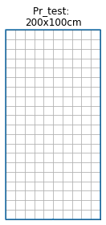
[6]:
cs = CrossSection.standard(label, None, height=height, width=width, unit=unit,
r_channel=35)
cs.generator()
fig = cs.profile_abs_figure()
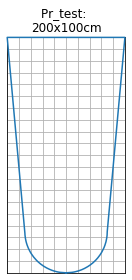
[7]:
cs = CrossSection.standard(label, None, height=height, width=width, unit=unit,
r_channel=35,
pre_bench=45)
cs.generator()
fig = cs.profile_abs_figure()
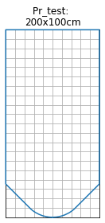
[8]:
cs = CrossSection.standard(label, None, height=height, width=width, unit=unit,
r_channel=35,
pre_bench=45,
slope_bench=5)
cs.generator()
fig = cs.profile_abs_figure()
[9]:
cs = CrossSection.standard(label, None, height=height, width=width, unit=unit,
r_channel=35,
h_bench=25,
slope_bench=5)
cs.generator()
fig = cs.profile_abs_figure()
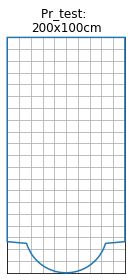
[10]:
cs = CrossSection.standard(label, None, height=height, width=width, unit=unit,
r_channel=35,
w_channel=25,
slope_bench=5)
cs.generator()
fig = cs.profile_abs_figure()
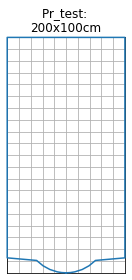
[11]:
cs = CrossSection.standard(label, None, height=height, width=width, unit=unit,
slope_bench=15)
cs.generator()
fig = cs.profile_abs_figure()
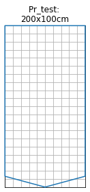
[12]:
cs = CrossSection.standard(label, None, height=height, width=width, unit=unit,
r_channel=30,
slope_bench=15)
cs.generator()
fig = cs.profile_abs_figure()
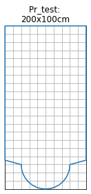
[13]:
cs = CrossSection.standard(label, None, height=height, width=width, unit=unit,
r_roof=100)
cs.generator()
fig = cs.profile_abs_figure()
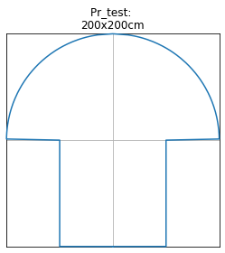
[14]:
cs = CrossSection.standard(label, None, height=height, width=width, unit=unit,
r_roof=30, r_wall=110)
cs.generator()
fig = cs.profile_abs_figure()
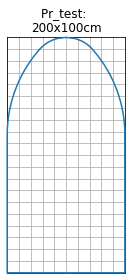
[15]:
cs = CrossSection.standard(label, None, height=height, width=width, unit=unit,
r_roof=20)
cs.generator()
fig = cs.profile_abs_figure()
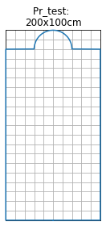
You can even make a standard egg cross section
[16]:
r = 30.
cs = CrossSection.standard(label, None, height=r * 3, width=r * 2, unit=unit,
r_channel=r / 2, r_wall=3 * r, r_wall_bottom=3 * r, r_roof=r, h_bench=r/5)
cs.generator()
fig = cs.profile_abs_figure()
Warning: unused part of the shape detected. Ignoring this part.
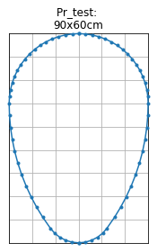
The warning occurred because the r_wall part was ignored. However, this input cannot be omitted, otherwise the following will happen.
[17]:
r = 30.
cs = CrossSection.standard(label, None, height=r * 3, width=r * 2, unit=unit,
r_channel=r / 2,
r_wall=3 * r,
r_roof=r,
h_bench=r/5)
cs.generator()
fig = cs.profile_abs_figure()
Warning: unused part of the shape detected. Ignoring this part.
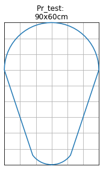
[18]:
r = 30.
cs = CrossSection.standard(label, None, height=r * 3, width=r * 2, unit=unit,
r_channel=r / 2,
r_wall_bottom=3 * r,
r_roof=r,
h_bench=r/5)
cs.generator()
fig = cs.profile_abs_figure()